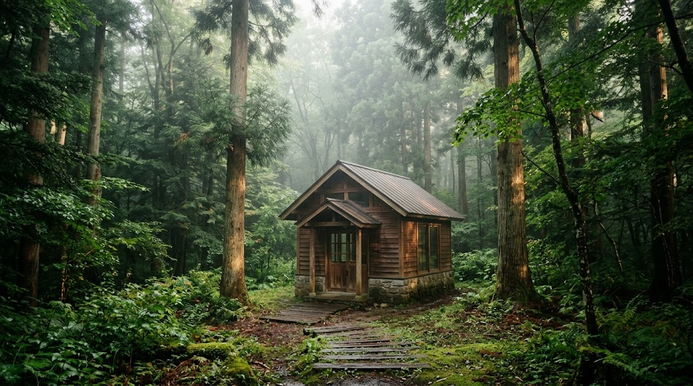
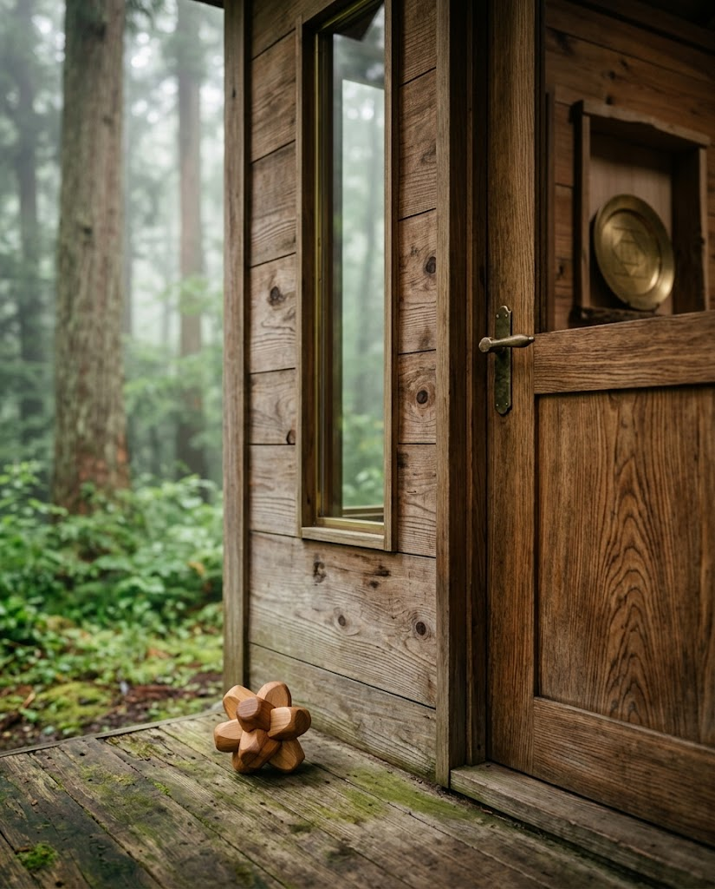
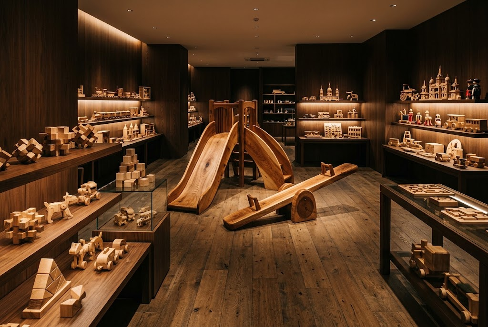

創設の想い
初代館長 伊藤英二
木夢の始まりは、初代館長・伊藤英二の、子どもと木のおもちゃへの想いでした。
伊藤英二は中学校教諭として勤務しながら木のおもちゃ作りに取り組み、「木夢の島」の発表を皮切りに、全国各地で作品展「メルヘン・ウッドワールド」を開催しました。
1997年4月に木夢を開業したのちも、晩年まで新たな作品を作り続けました。
木のぬくもりに触れ、
長く愛される おもちゃの世界へ。
プラスチック製品が主流となった今だからこそ、長く愛用できる木のおもちゃのよさを。
木夢は、木のおもちゃの魅力を伝えることを大切にしてきた美術館です。手に取るたびに変わる質感、年月とともに深まる色合い。子どもから大人まで、木と親しむ時間をお過ごしください。


展示数3,000点
大型木製遊具から組木、手づくりの木のおもちゃまで。見て、触れて、遊べる展示をご用意しています。

初代館長 伊藤英二
木夢の始まりは、初代館長・伊藤英二の、子どもと木のおもちゃへの想いでした。
伊藤英二は中学校教諭として勤務しながら木のおもちゃ作りに取り組み、「木夢の島」の発表を皮切りに、全国各地で作品展「メルヘン・ウッドワールド」を開催しました。
1997年4月に木夢を開業したのちも、晩年まで新たな作品を作り続けました。
★★★★「木」と親しむところ。入って右の劇場は時間限定。確かめてから他の展示を見た方が良い。子供連れなら楽しめる。
★★★★★子供達が小さい頃(20数年前)おじゃました良い想い出､今回は大人6名+天使達でやって来ました。全員で楽しい時間を過ごせた事に感謝します。